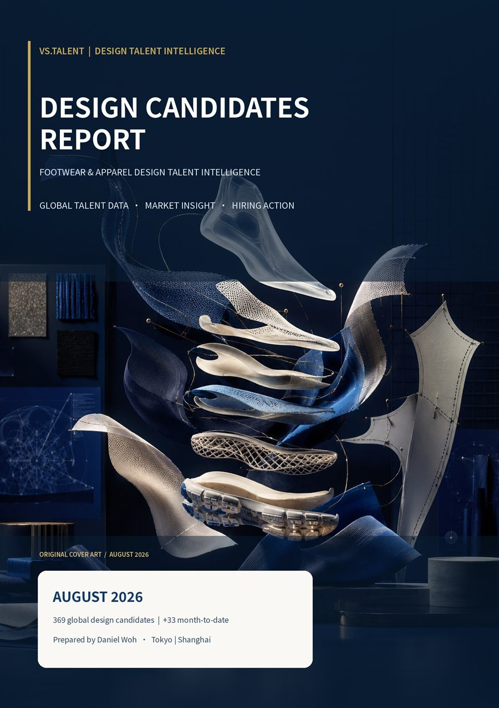

As of 27 August 2026, the database covers 369 footwear and apparel design professionals who are recently open to opportunities — 33 more than the July snapshot, representing 9.8% growth. The August additions are weighted toward apparel design and strengthen the database across Sportstyle, Outdoor, Fashion and Luxury.

Updated
August 2026
Candidates
369
Month-on-month
+33 · +9.8%
Focus
Footwear & Apparel Design
Coverage
Global
Talent Analytics · August 2026
Leading Brand Ecosystems
A total of 106 candidates have adidas experience, representing 28.7% of the database and five more than in July. There are 244 unique candidates with experience at one or more leading brands, equal to 66.1% of the database. Nike (36), Puma (29) and The North Face (28) form critical secondary pools. Anta (10), Li-Ning (10), Descente (9) and FILA (9) reflect growing visibility of Asian sports brands.
Talent Analytics · August 2026
Global Nationality Distribution
The database includes 121 American candidates (32.8%), including 13 August additions. Chinese and Korean representation each stand at 47. The Top 10 nationalities account for 343 candidates, or 93.0% of the pool. The remaining 26 candidates span 15 other nationalities.
Talent Analytics · August 2026
Preferred Work Destinations
China was selected by 147 candidates (39.8% of the database) — 21 more than in July. Japan received 120 selections (32.5%) and leads cross-border inflow with 101 selections versus China's 95. China, Japan and Korea together received 239 selections, while the US and Europe still received 78 and 38 respectively.
Talent Analytics · August 2026
Cross-border Talent Mobility
Of 237 cross-border destination selections, Japan received 101 and China 95 — together 82.7% of all cross-border selections. US→Japan ranks first with 38 selections, followed by US→China with 25. Among 359 eligible candidates, 183 (51.0%) have at least one cross-border country preference. The Top 10 flows account for 170 selections, or 71.7% of all flows.
Talent Analytics · August 2026
Salary Distribution
Based on 107 valid salary records from 369 candidates (29.0%). The US has the highest median among markets with larger samples (approximately USD 220K across 34 records), well above China (USD 108K), Germany (USD 94K) and Korea (USD 67K). Italy, the UK, Japan and France should be read as directional because of smaller samples. Findings should be interpreted as directional rather than precise market pricing.
Cross-border hiring conversion for international design talent.
August data shows that 183 eligible candidates have at least one cross-border country preference, representing 51.0% of the 359-record location universe. Japan and China received 101 and 95 cross-border destination selections respectively. International design talent is willing to move, but there is still a meaningful conversion gap between interest in an opportunity and a completed contract, relocation and start date.
For senior design professionals, an international move is rarely a simple salary comparison. Brand platform and compensation remain important, yet process transparency, internal decision speed and cross-functional coordination increasingly influence offer acceptance and eventual onboarding.
Hiring Intelligence · August 2026
Hiring Recommendations
Strategic priorities for brands competing in an international, ecosystem-driven design talent market.
01
Build maps around brand ecosystems and adjacent categories
Start with major ecosystems such as adidas, Nike, Puma and The North Face, while including adjacent Outdoor, Golf, Lifestyle and Luxury brands. Build a long-term pool of at least 30–50 people for each critical role.
02
Differentiate the international talent proposition for China and Japan
China can prioritize Korea, the US, the UK and Italy, while Japan can focus on the US, Germany, Korea and the UK. Role messaging should be adjusted by source market.
03
Assess transferable capability across design categories
Sportstyle, Performance and Outdoor are the three most common experience areas. Portfolio assessment should cover specialist depth, consumer insight, and the ability to transfer skills into new product contexts.
04
Treat the offer process as an international hiring capability
Prepare clear information on salary, bonus, visa, relocation, non-compete and benefits before the final interview, and set firm internal approval timelines.
05
Improve the completeness and comparability of compensation data
Only 29.0% of current records contain usable salary data. Future interviews should consistently capture base salary, bonus, equity, currency, gross or net basis and data date.
Platform
VS.talent Intelligence
Ongoing market intelligence for footwear and apparel brands — informing search strategy, workforce planning, and design leadership decisions.
Monthly Talent Intelligence
Market intelligence on brand backgrounds, nationality distribution, mobility, and hiring dynamics.
Talent Mapping
Named org charts and talent landscapes for competitor and adjacent brands.
Compensation Benchmarking
Role-level salary and total compensation analysis by region, function, and brand tier.
Market Watch
Regional talent dynamics, cross-border mobility, and emerging design market signals.